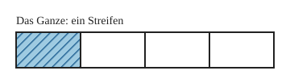
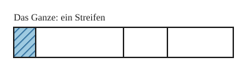

Anteile: Was ist ein Bruch?
Mit einem KI-Tutor lernen
Ein KI-Tutor erklärt dir diese Seite und hilft dir bei den Übungen. Wähl deinen Assistenten:
Mit Claude öffnen Mit ChatGPT öffnen Mit Mistral Vibe öffnen
Du nutzt dein eigenes Konto beim Anbieter. Der Assistent ist kein Angebot von lernapps.net: lernapps liefert nur Inhalte und Übungen. Die Wahl gilt für alle Seiten, nur auf diesem Gerät.
Einstieg
4 Kinder teilen eine Tafel Schokolade. Jedes Kind bekommt gleich viel. Jedes Kind bekommt ein Viertel. Mit natürlichen Zahlen wie 1, 2, 3 zählst du ganze Dinge. Für einen Teil von einem Ganzen brauchst du etwas Neues: den Bruch.
Anschaulich erklärt
Im Bild ist der ganze Streifen das Ganze, zum Beispiel die Tafel Schokolade. Er ist in 4 Teile geteilt. Alle 4 Teile sind gleich groß. Ein Teil ist blau gestreift.

Schau, wie viele Teile der Streifen hat und welches Teil gestreift ist.
Quelle: eigene Zeichnung. Lizenz: CC-BY-4.0.Das gestreifte Stück ist ein Viertel vom Ganzen. Man schreibt es so: .
- Bruch
Ein Bruch beschreibt einen Teil von einem Ganzen. Das Ganze ist in gleich große Teile geteilt.
Die Teile müssen gleich groß sein
Nur wenn alle Teile gleich groß sind, kannst du sie zählen und einen Bruch dafür sagen.

Auch hier sind es 4 Teile. Das gestreifte Teil ist kein Viertel. Die Teile sind verschieden groß.
Quelle: eigene Zeichnung. Lizenz: CC-BY-4.0.Beispiel
Pizza teilen
Eine Pizza wird in 3 gleich große Stücke geschnitten. Du isst 1 Stück. Du hast ein Drittel der Pizza gegessen, geschrieben .
Übung
Übung
Lösung
Der Kuchen ist in 3 gleich große Stücke geteilt, du nimmst 1.
Hier ist das Ganze in 3 gleich große Teile geteilt. Ein Stück ist dann ein Drittel.
Der Kuchen ist in 4 Stücke geteilt, du nimmst 1, die Stücke sind verschieden groß.
Es sind zwar 4 Stücke, aber ein Viertel gibt es nur bei gleich großen Teilen.
Der Kuchen ist in 4 gleich große Stücke geteilt, du nimmst 1. richtige Antwort
Das Ganze hat 4 gleich große Teile, du nimmst 1 davon. Das ist ein Viertel.
Der Kuchen ist in 8 gleich große Stücke geteilt, du nimmst 1.
Hier ist das Ganze in 8 gleich große Teile geteilt. Ein Stück ist dann ein Achtel.
Ein Viertel heißt: Das Ganze ist in 4 gleich große Teile geteilt, und du nimmst 1 Teil davon.
Mehr dazu:
Übung
Lösung
Bild A
Der Streifen hat zwar 3 Teile, aber sie sind verschieden groß. Das gestreifte Teil ist kein Drittel.
Bild B richtige Antwort
Der Streifen hat 3 gleich große Teile und 1 Teil ist gestreift. Das ist ein Drittel.
Bild C
Der Streifen hat 4 gleich große Teile. Ein gestreiftes Teil davon ist ein Viertel, kein Drittel.
Ein Drittel braucht 3 gleich große Teile, von denen 1 gestreift ist.
Mehr dazu:
Übung
Lösung
Richtige Antwort: Die Aussage stimmt nicht.
Die 4 Teile sind verschieden groß. Ein Viertel gibt es nur, wenn alle 4 Teile gleich groß sind.
Mehr dazu: